本地映射的核心逻辑是建立一张映射表：远程 URL <-> 本地文件路径。当代理拦截到远程 URL 时，直接去查这张表，返回对应的本地文件。
站在 HTTP 协议和代理引擎的角度，它做了一件非常纯粹的事情：Response Body Replacement。
在前端具体的业务场景中，我们通常用这类词汇来描述它的目的。
咱先物色一个网站。找啊找啊，终于找到了一个网站：百度。就选它吧！
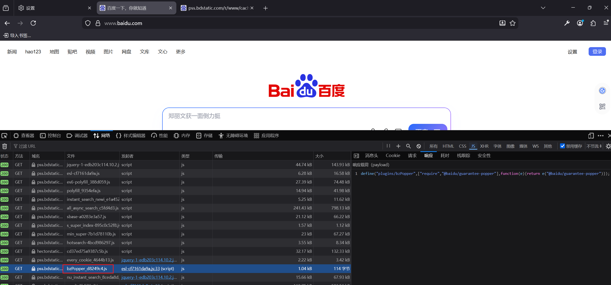
选择的文件是
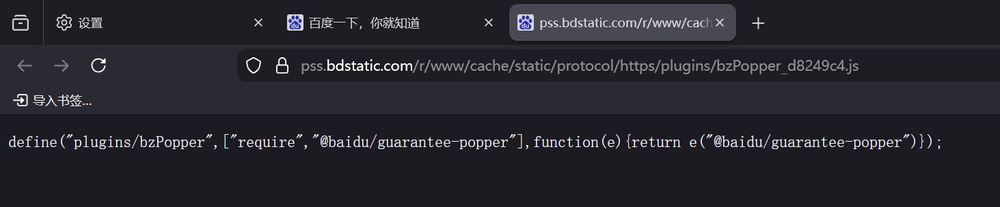
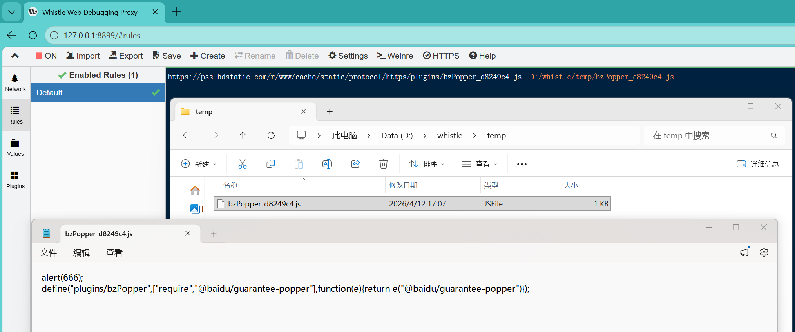
还得是火狐啊！她可以直接配置代理，不像
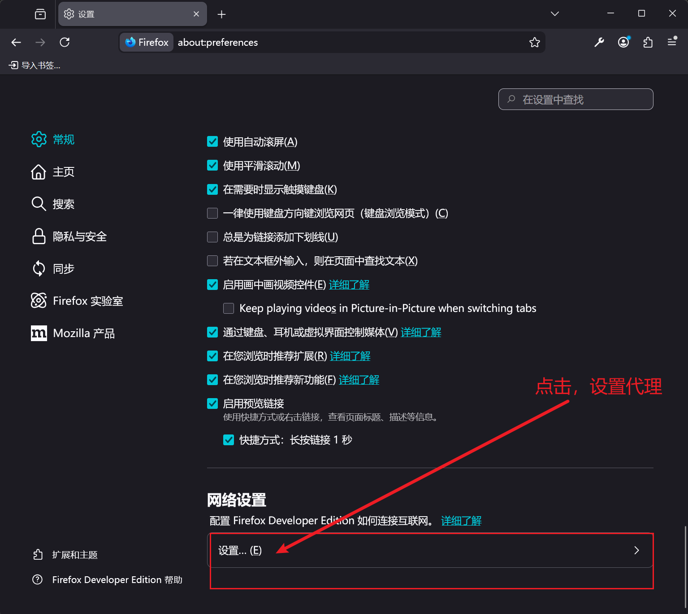
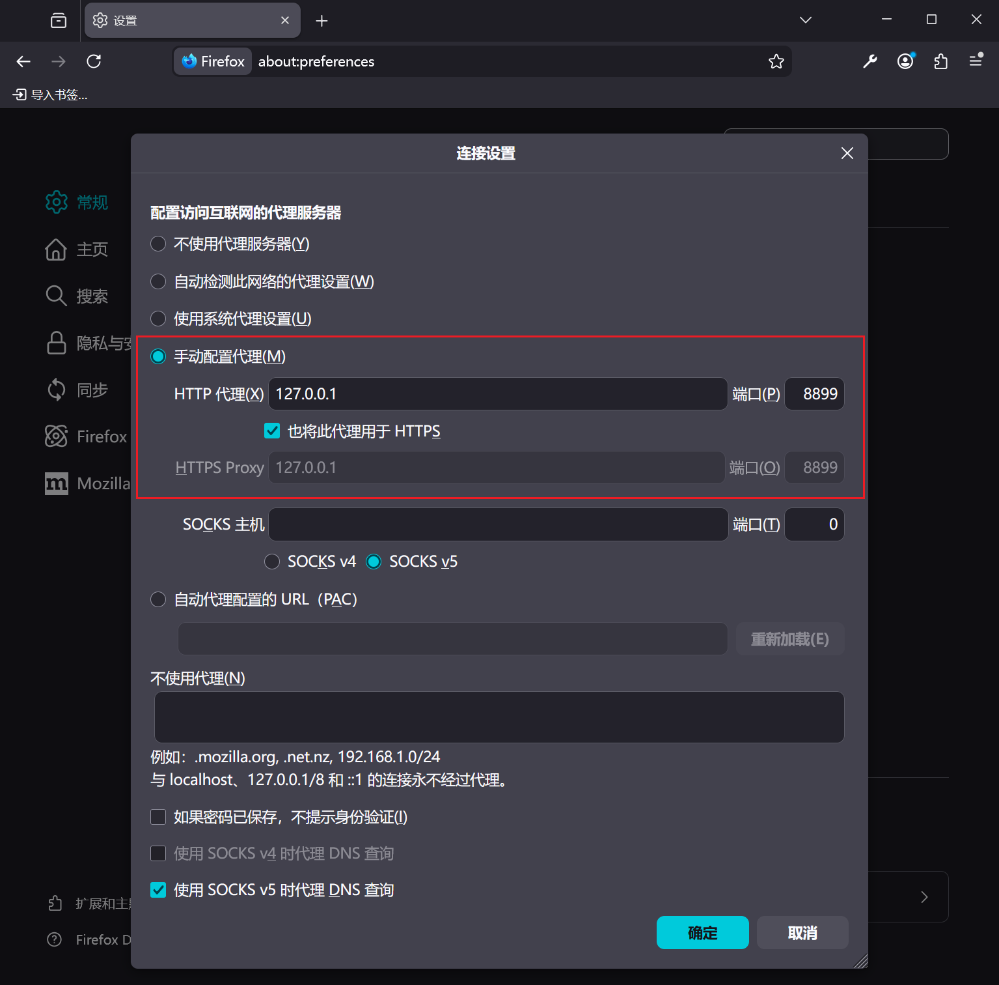
在访问JS文件和刷新页面如下：
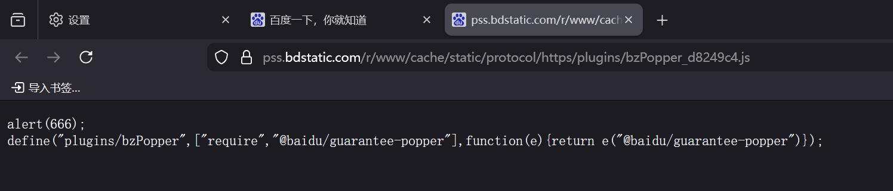
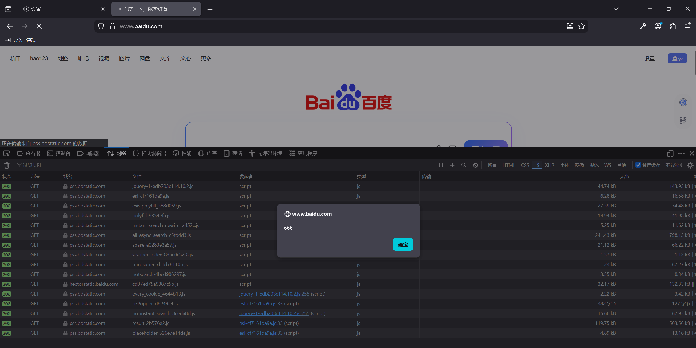
前置提醒：如果弄完不好使，可以重启浏览器试试
如何安装咱就不说了啊。配置如下：
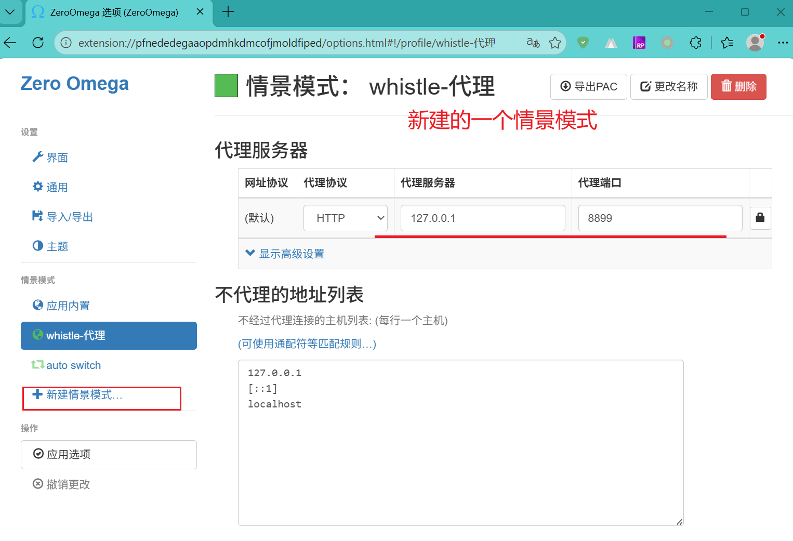
如果不想全局代理，可以设置 自动切换模式：
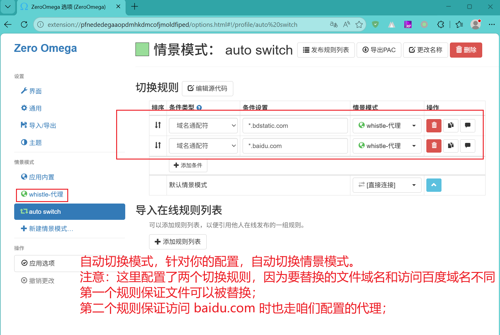
在访问JS文件和刷新页面如下：
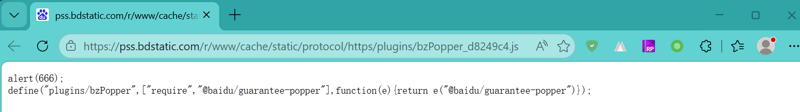
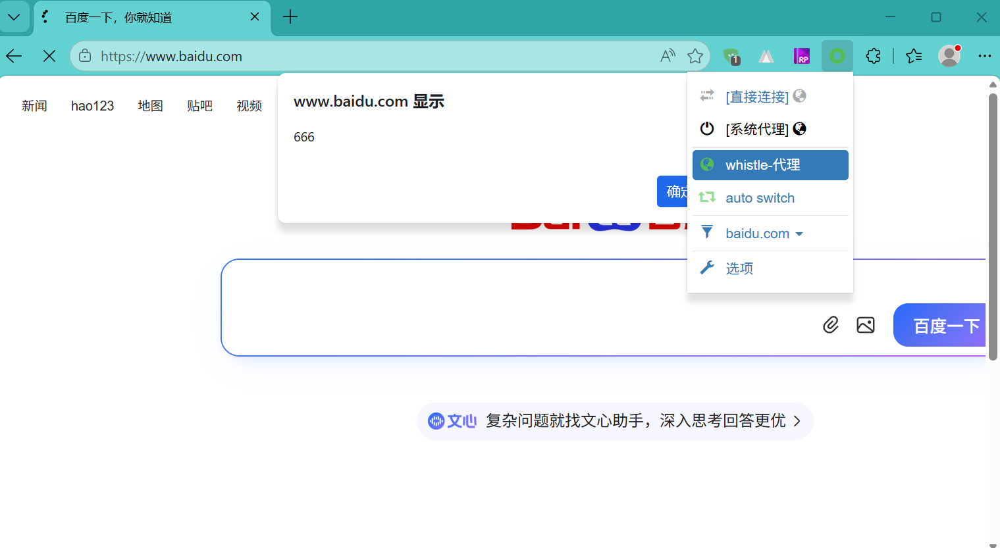
上面的截图中使用的是“whistle-代理”情景模式。如果只想代理“百度”，其他的网站不受影响，你可以选择“auto switch”